Home
本示例说明了如何使用分水岭分割来分离图像中的物体。分水岭变换通过将图像视为亮像素高而暗像素低的表面，在图像中找到“集水盆地”和“分水岭脊线”。
如果您可以识别或“标记”前景物体和背景位置，则使用分水岭变换进行分割会更好。标记控制的分水岭分割遵循以下基本过程：
计算分割函数。这是一张图像，其暗区是您要分割的物体。
计算前景标记。这些是每个物体中像素的连通域。
计算背景标记。这些是不属于任何物体的像素。
修改分割函数，使其仅在前景和背景标记位置具有最小值。
计算修改后的分割函数的分水岭变换。
步骤1：读取彩色图像并将其转换为灰度
rgb = imread('pears.png');
I = rgb2gray(rgb);
imshow(I)
text(732,501,'Image courtesy of Corel(R)',...
'FontSize',7,'HorizontalAlignment','right')
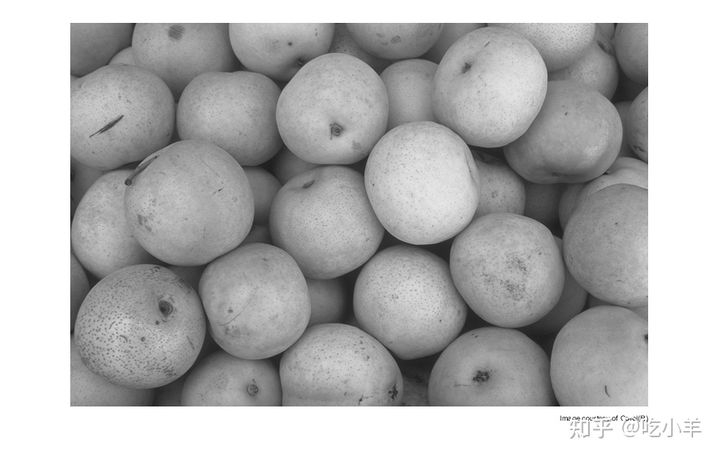
步骤2：使用梯度幅度作为分割函数
计算梯度幅度。梯度在物体边界处较高，而在物体内部的梯度较低（大部分）。
gmag = imgradient(I);
imshow(gmag,[])
title('Gradient Magnitude')
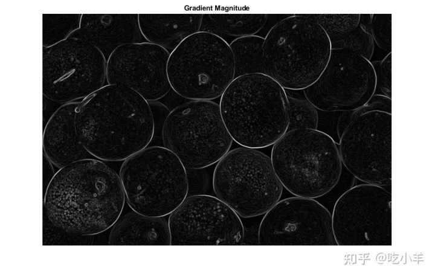
您是否可以直接在梯度幅度上使用分水岭变换对图像进行分割？
L = watershed(gmag);
Lrgb = label2rgb(L);
imshow(Lrgb)
title('Watershed Transform of Gradient Magnitude')
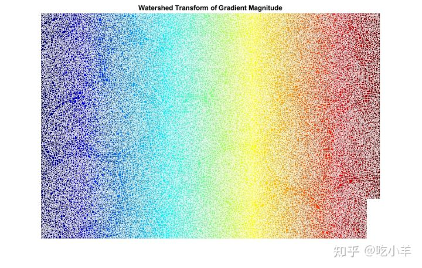
不行。如果不进行其他预处理（例如下面的标记计算），则直接使用分水岭变换通常会导致“过度分割”。
步骤3：标记前景物体
在这里可以应用各种过程来找到前景标记，这些前景标记必须与每个前景物体内部的像素区域相连。在此示例中，您将使用称为“开重建”和“闭重建”的形态学技术“清理”图像。这些操作用imregionalmax将在每个可使用定位的物体内创建平坦的最大值。
开操作是腐蚀然后是膨胀，而开重建是腐蚀然后是形态学重建。让我们比较一下两者。首先，使用开操作imopen。
se = strel('disk',20);
Io = imopen(I,se);
imshow(Io)
title('Opening')
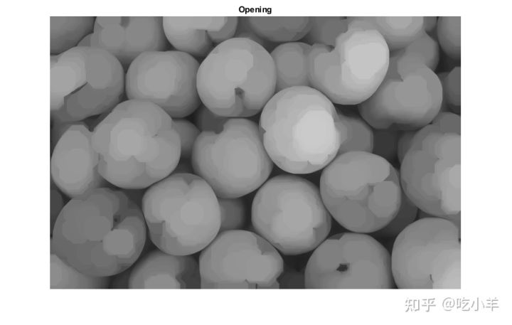
接下来，使用imerode和imreconstruct计算开重建。
Ie = imerode(I,se);
Iobr = imreconstruct(Ie,I);
imshow(Iobr)
title('Opening-by-Reconstruction')
开操作后可以用闭操作消除黑点和茎干痕迹。比较常规形态学闭操作与闭重建。首先尝试imclose：
Ioc = imclose(Io,se);
imshow(Ioc)
title('Opening-Closing')
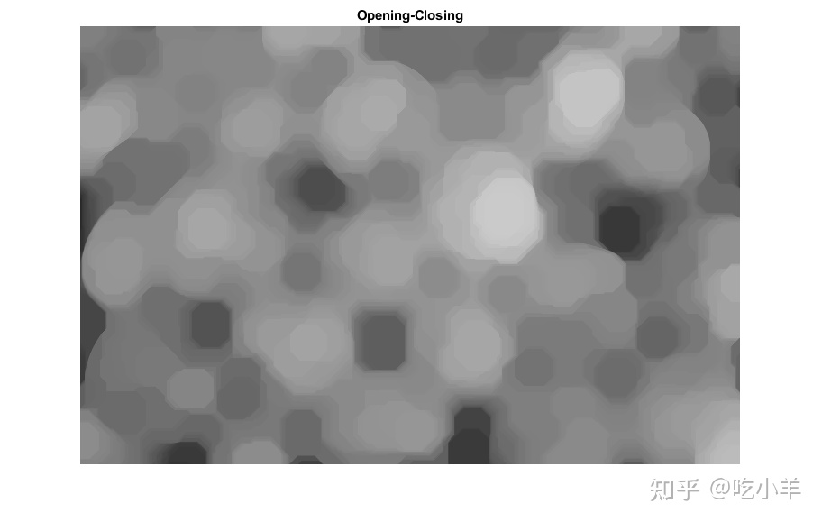
现在使用imdilate之后再用imreconstruct。请注意，您必须对imreconstruct图像的输入和输出进行补集操作。
Iobrd = imdilate(Iobr,se);
Iobrcbr = imreconstruct(imcomplement(Iobrd),imcomplement(Iobr));
Iobrcbr = imcomplement(Iobrcbr);
imshow(Iobrcbr)
title('Opening-Closing by Reconstruction')
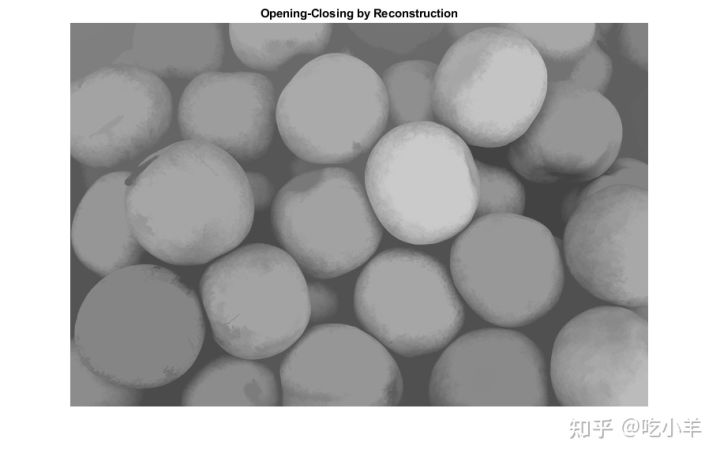
如你所见，可以用Ioc比较Iobrcbr，在不影响物体的总体形状的条件下消除小瑕疵，基于重建的开和闭比标准的开操作和闭操作更加有效。计算Iobrcbr的区域最大值以获得良好的前景标记。
fgm = imregionalmax(Iobrcbr);
imshow(fgm)
title('Regional Maxima of Opening-Closing by Reconstruction')
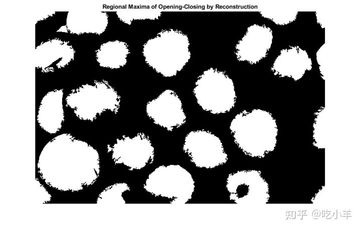
为了帮助解释结果，请将前景标记图像叠加在原始图像上。
I2 = labeloverlay(I,fgm);
imshow(I2)
title('Regional Maxima Superimposed on Original Image')
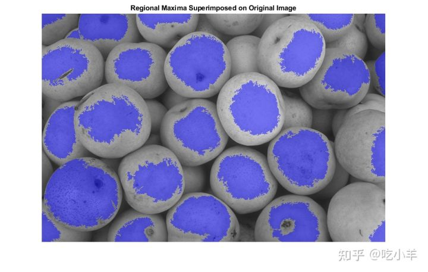
请注意，某些未完全遮盖和阴影的物体未标记，这意味着在最终结果中将无法正确分割这些物体。此外，某些对象中的前景标记会一直向上延伸到对象的边缘。这意味着您应该清理标记斑点的边缘，然后将其缩小一点。您可以先闭操作再进行侵蚀操作。
se2 = strel(ones(5,5)); fgm2 = imclose(fgm,se2); fgm3 = imerode(fgm2,se2);
此过程往往会留下一些必须隔离的杂散孤立像素。您可以使用bwareaopen来执行此操作，该操作会删除像素少于一定数量的所有斑点。
fgm4 = bwareaopen(fgm3,20);
I3 = labeloverlay(I,fgm4);
imshow(I3)
title('Modified Regional Maxima Superimposed on Original Image')
步骤4：计算背景标记
现在您需要标记背景。在清理后的图像Iobrcbr中，黑色像素属于背景，因此您可以从阈值操作开始。
bw = imbinarize(Iobrcbr);
imshow(bw)
title('Thresholded Opening-Closing by Reconstruction')
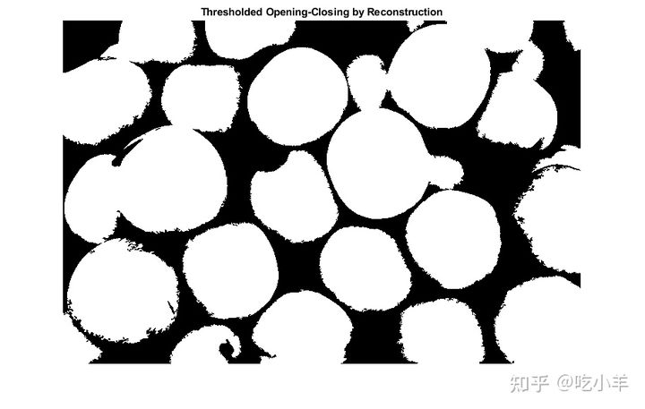
背景像素为黑色，但理想情况下，我们不希望背景标记离我们要分割的对象的边缘太近。我们将通过计算bw前景的“受影响区域的骨架”（SKIZ）来“缩小”背景。可以通过计算bw距离变换的分水岭变换，然后寻找结果的分水岭脊线（DL == 0）来完成。
D = bwdist(bw);
DL = watershed(D);
bgm = DL == 0;
imshow(bgm)
title('Watershed Ridge Lines')
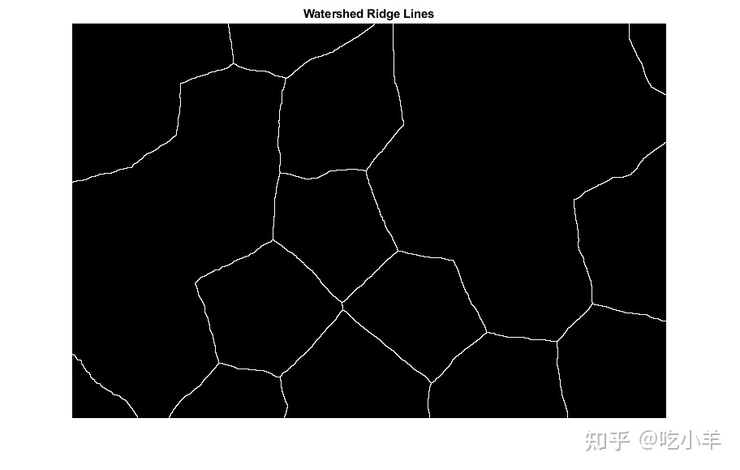
步骤5：计算分割函数的分水岭变换
函数imimposemin可用于修改图像，使其仅在某些所需位置具有区域最小值。在这里，您可以用imimposemin来修改梯度幅度图像，以使其唯一的区域最小值出现在前景和背景标记像素上。
gmag2 = imimposemin(gmag, bgm | fgm4);
最后，计算基于分水岭的分割。
L = watershed(gmag2);
步骤6：可视化结果
一种可视化技术是在原始图像上叠加前景标记、背景标记和分割物体的边界。您可以根据需要使用膨胀来使某些方面（例如对象边界）更加可见。物体边界位于L == 0处。二进制前景和背景标记缩放到不同的整数值，以便为它们分配不同的标签。
labels = imdilate(L==0,ones(3,3)) + 2*bgm + 3*fgm4;
I4 = labeloverlay(I,labels);
imshow(I4)
title('Markers and Object Boundaries Superimposed on Original Image')
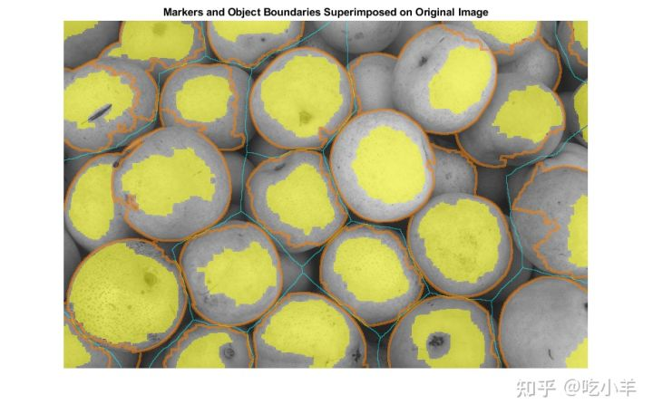
该可视化说明了前景标记和背景标记的位置如何影响结果。在几个位置中，部分被遮挡的较暗对象与它们的明亮邻居物体合并，因为被遮挡的物体没有前景标记。
另一种有用的可视化技术是将标签矩阵显示为彩色图像。标签矩阵（例如由watershed和bwlabel生成的标签矩阵）可以使用label2rgb转换为真彩色图像，以用于可视化目的。
Lrgb = label2rgb(L,'jet','w','shuffle');
imshow(Lrgb)
title('Colored Watershed Label Matrix')
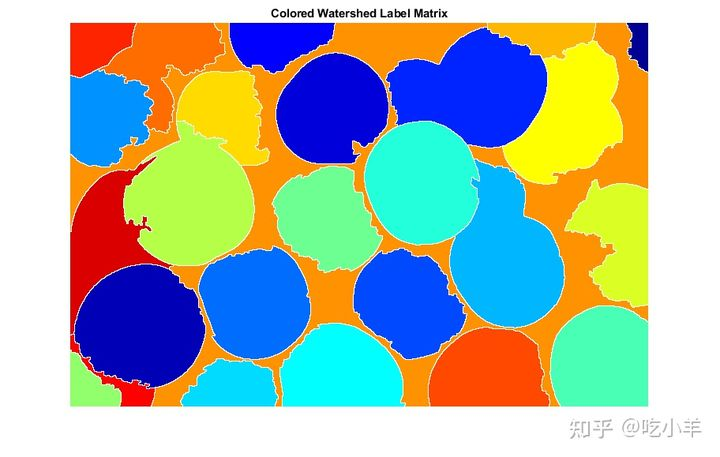
步骤5：计算分割函数的分水岭变换
您可以使用透明度将此伪彩色标签矩阵叠加在原始强度图像的顶部。
figure
imshow(I)
hold on
himage = imshow(Lrgb);
himage.AlphaData = 0.3;
title('Colored Labels Superimposed Transparently on Original Image')
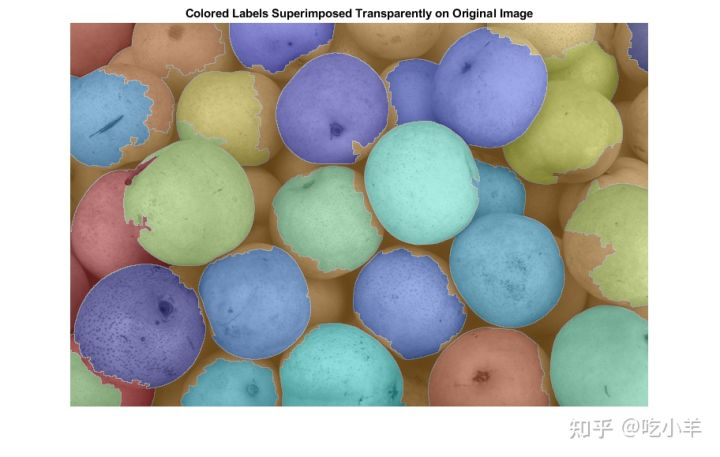
======================================================================
我的测试结果及程序
下面是我测试的代码：

注：本文根据MATLAB官网内容修改而成。